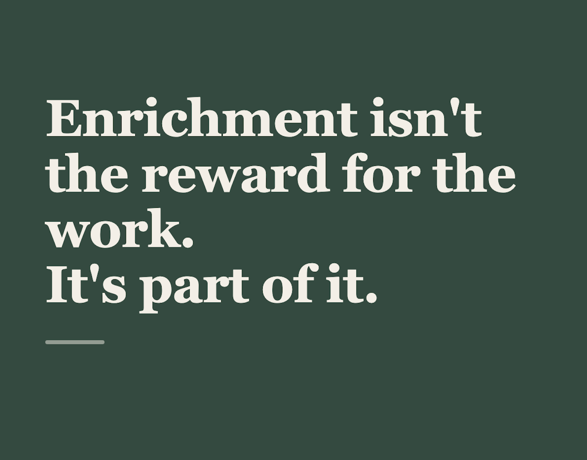

Enrichment isn't the reward for the work. It's part of it.
There's a child in every school who's never been out of the county, walked in a city or felt sand between their toes on a beach.
Not neglected, not in crisis. Just quietly growing up inside a small map of what's possible for someone like them. The trip that takes that child over the county line isn't a day out. It's the afternoon their sense of what they might do with their life gets bigger.
And it goes deeper than the trip. The child who does something hard on a Saturday and comes back changed by it carries that into Monday's lessons. They pick the harder question. They have another go when it doesn't work. Enrichment doesn't sit beside the academic work. It's often what unlocks it.
Here's the part that should bother us. When enrichment gets treated as a nice-to-have, it's the most disadvantaged children who lose it first, because for them the school's offer was the only offer going. Manage it as an add-on and it never gets planned properly and you never notice who's quietly missing out.
Enrichment isn't the reward for the real work. It's part of the real work.
So, honestly: which child in your school is the one your enrichment offer is quietly leaving out?